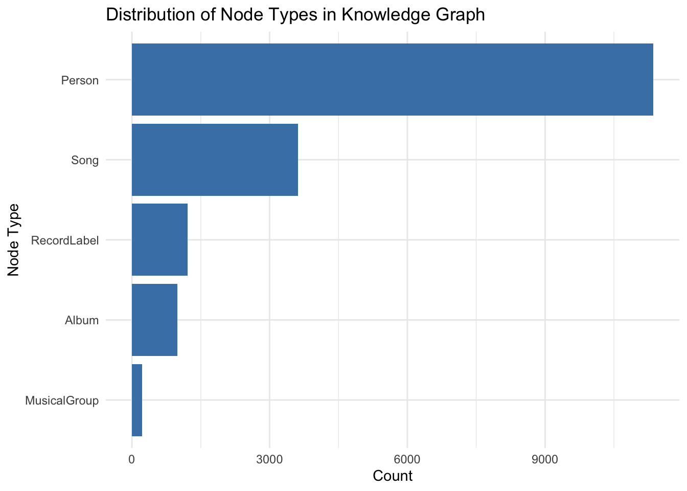
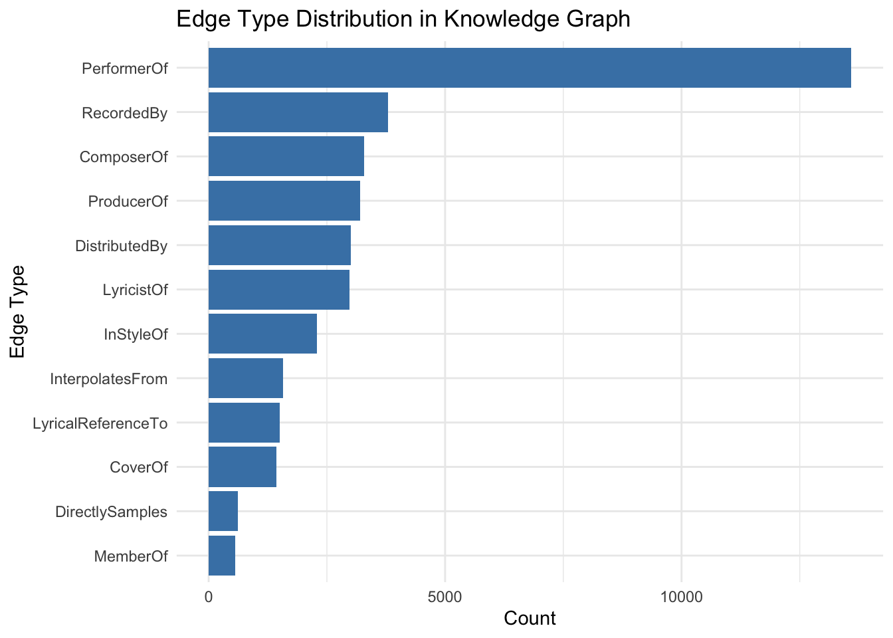
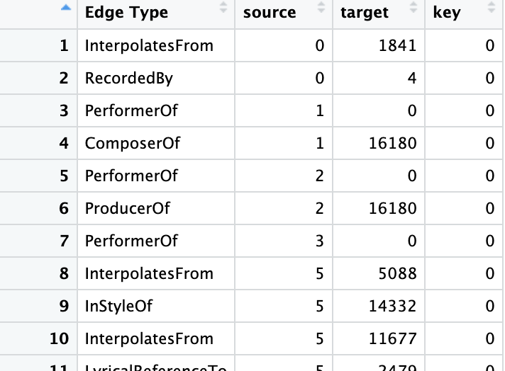
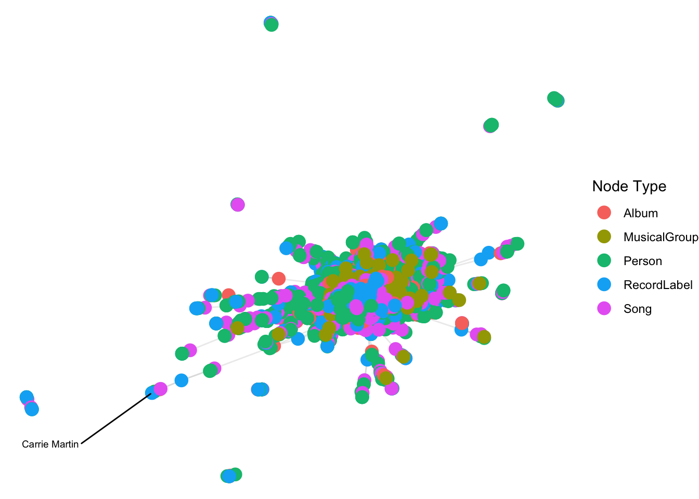
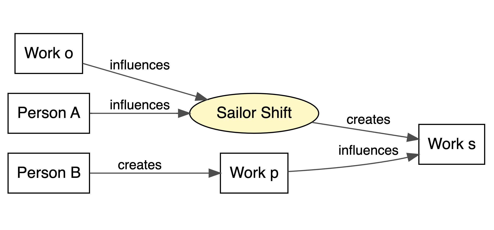
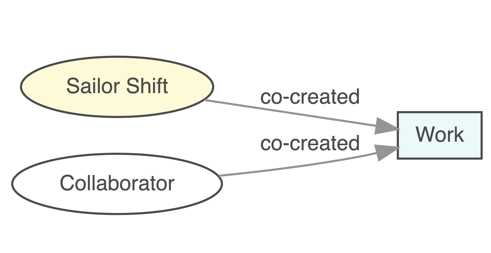
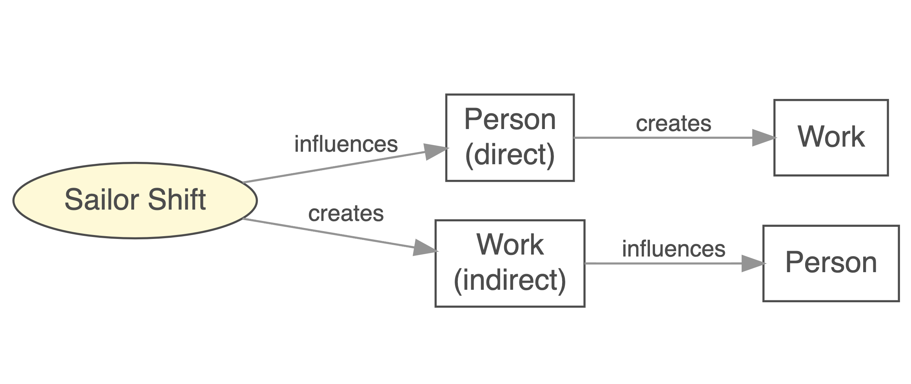
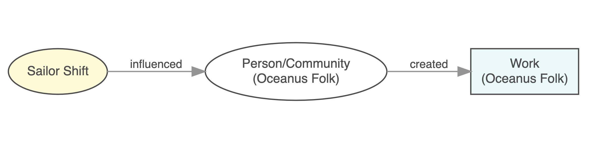

pacman::p_load(tidyverse, jsonlite,
tidygraph, ggraph,ggplot2,SmartEDA,igraph,visNetwork,DiagrammeR)Take Home Exercise 2
VAST Challenge 2024 Mini-Challenge 1
Overview
In this exercise, I will address Question 1 and Question 2 individually.
Design and develop visualizations and visual analytic tools that will allow Silas to explore and understand the profile of Sailor Shift’s career
Who has she been most influenced by over time?
Who has she collaborated with and directly or indirectly influenced?
How has she influenced collaborators of the broader Oceanus Folk community?
Develop visualizations that illustrate how the influence of Oceanus Folk has spread through the musical world.
Was this influence intermittent or did it have a gradual rise?
What genres and top artists have been most influenced by Oceanus Folk?
On the converse, how has Oceanus Folk changed with the rise of Sailor Shift? From which genres does it draw most of its contemporary inspiration?
Getting Started
For the purpose of this exercise, four R packages will be used. They are tidyverse, jsonlite, tidygraph and ggraph.
In the code chunk below, p_load() of pacman package is used to load the R packages into R environemnt.
Importing Kownledge Graph Data
For the purpose of this exercise, MC1_graph.json file will be used. Before getting started, you should have the data set in the data sub-folder.
In the code chunk below, fromJSON() of jsonlite package is used to import MC1_graph.json file into R and save the output object
kg <- fromJSON("data/MC1_graph.json")What are the components of kg data?
glimpse(kg)List of 5
$ directed : logi TRUE
$ multigraph: logi TRUE
$ graph :List of 2
..$ node_default: Named list()
..$ edge_default: Named list()
$ nodes :'data.frame': 17412 obs. of 10 variables:
..$ Node Type : chr [1:17412] "Song" "Person" "Person" "Person" ...
..$ name : chr [1:17412] "Breaking These Chains" "Carlos Duffy" "Min Qin" "Xiuying Xie" ...
..$ single : logi [1:17412] TRUE NA NA NA NA FALSE ...
..$ release_date : chr [1:17412] "2017" NA NA NA ...
..$ genre : chr [1:17412] "Oceanus Folk" NA NA NA ...
..$ notable : logi [1:17412] TRUE NA NA NA NA TRUE ...
..$ id : int [1:17412] 0 1 2 3 4 5 6 7 8 9 ...
..$ written_date : chr [1:17412] NA NA NA NA ...
..$ stage_name : chr [1:17412] NA NA NA NA ...
..$ notoriety_date: chr [1:17412] NA NA NA NA ...
$ links :'data.frame': 37857 obs. of 4 variables:
..$ Edge Type: chr [1:37857] "InterpolatesFrom" "RecordedBy" "PerformerOf" "ComposerOf" ...
..$ source : int [1:37857] 0 0 1 1 2 2 3 5 5 5 ...
..$ target : int [1:37857] 1841 4 0 16180 0 16180 0 5088 14332 11677 ...
..$ key : int [1:37857] 0 0 0 0 0 0 0 0 0 0 ...The result shows a typical knowledge graph (KG) data structure, the detail explanation is as followed:
1.The overall structure is a list of 5 elements:
| Element Name | Meaning |
|---|---|
| directed: TRUE | Indicates the graph is directed (i.e., relationships have direction, like “someone performed a song”) |
| multigraph: TRUE | Indicates this is a multigraph, meaning multiple edges (relationships) can exist between the same pair of nodes (e.g., a person can be both “composer” and “performer”) |
| graph | Contains default attributes for nodes and edges (currently empty named lists) |
| nodes | A data.frame, each row represents a node (e.g., a person or a song) |
| links | A data.frame, each row represents an edge (i.e., a relationship between two nodes) |
2.nodes table (node metadata)
There are 17,412 nodes, with the following variables:
| Column Name | Example / Meaning |
|---|---|
| Node Type | Node type, such as "Song" or "Person" |
| name | Name of the node (e.g., a person or song title) |
| single | Whether it is a single (TRUE / FALSE) |
| release_date | Release date (e.g., "2017") |
| genre | Genre (e.g., "Oceanus Folk") |
| notable | Whether it’s notable (TRUE / FALSE) |
| id | Unique ID for the node |
| written_date | Date the song was written |
| stage_name | Stage name (if any) |
| notoriety_date | Date the artist became known (if any) |
3.links table (edge/relationship information)
There are 37,857 edges, with the following columns:
| Column Name | Meaning / Example |
|---|---|
| Edge Type | Type of relationship (e.g., "PerformerOf", "ComposerOf", "InterpolateFrom") |
| source | ID of the source node |
| target | ID of the target node |
| key | Differentiates multiple edges between the same nodes |
Inspect structure
Before preparing the data, it is always a good practice to examine the structure of kg object.
In the code chunk below str() is used to reveal the structure of kg object.
str(kg, max.level = 1)List of 5
$ directed : logi TRUE
$ multigraph: logi TRUE
$ graph :List of 2
$ nodes :'data.frame': 17412 obs. of 10 variables:
$ links :'data.frame': 37857 obs. of 4 variables:Extracting the edges and nodes tables
Next, as_tibble() of tibble package package is used to extract the nodes and links tibble data frames from kg object into two separate tibble data frames called nodes_tbl and edges_tbl respectively.
nodes_tbl <- as_tibble(kg$nodes)
edges_tbl <- as_tibble(kg$links) Initial EDA
It is time for us to apply appropriate EDA methods to examine the data.
In this code chunk below, ggplot2 functions are used the reveal the frequency distribution of Edge Type field of edges_tbl.
nodes_tbl %>%
count(`Node Type`) %>%
ggplot(aes(x = n, y = reorder(`Node Type`, n))) +
geom_col(fill = "steelblue") +
labs(title = "Distribution of Node Types in Knowledge Graph",
x = "Count", y = "Node Type") +
theme_minimal()
Most nodes are of type Person
Explanation: Individuals (singers, composers, producers, etc.) form the majority of nodes.
Insight: The knowledge graph is person-centric, emphasizing individual contributions in the music ecosystem.
Song is the second most frequent node type
Explanation: Songs are heavily represented, as expected in a music-related knowledge graph.
Insight: This reflects the graph’s role in mapping who is connected to which songs, enabling analysis of performance, authorship, and influence.
Other node types (e.g., RecordLabel, Album, MusicalGroup) are far fewer
Explanation: Entities like music labels, albums, and groups are present but much less prominent.
Insight: These nodes play a supporting role in contextualizing the people-song relationships, potentially useful for advanced analyses (e.g., influence of labels, collaborations within groups).
MusicalGroup nodes are very rare
- Insight: Either the graph focuses more on individual artists rather than bands/groups, or group membership data may be under-represented.
edges_tbl %>%
count(`Edge Type`) %>%
ggplot(aes(x = n, y = reorder(`Edge Type`, n))) +
geom_bar(stat = "identity", fill = "steelblue") +
labs(title = "Edge Type Distribution in Knowledge Graph",
x = "Count", y = "Edge Type") +
theme_minimal()
“PerformerOf” is the most frequent edge type
Explanation: The majority of edges connect a person to a song via a performance relationship.
Insight: This indicates that the relationship between performers and songs is a core structure in the knowledge graph, showing that the graph places a strong emphasis on who performed what.
“RecordedBy”, “ComposerOf”, and “ProducerOf” are also common
Explanation: Besides performers, the graph also documents many creators of the music, including composers, producers, and recording personnel.
Insight: This suggests the graph goes beyond surface-level links, capturing multiple roles across the music creation pipeline.
Edge types like “DirectlySamples”, “CoverOf”, “MemberOf”, and “LyricalReferenceTo” are less frequent
Explanation: These edges represent more complex or less common musical relationships, such as:
DirectlySamples: relates to copyright and musical inspiration
CoverOf: shows the propagation of classic works through cover versions
MemberOf: describes group or band membership
Insight: Although less common, these edge types may hold higher value in studying musical influence and cultural transmission.
On the other hands, code chunk below uses ggplot2 functions to reveal the frequency distribution of Node Type field of nodes_tbl.
Creating Knowledge Graph
Mapping from node id to row index
Before we can go ahead to build the tidygraph object, it is important for us to ensures each id from the node list is mapped to the correct row number. This requirement can be achive by using the code chunk below.
id_map <- tibble(id = nodes_tbl$id, #Retrieve the ID column of each row node
index = seq_len(
nrow(nodes_tbl))) #Generate a line number sequence from 1 to nMap source and target IDs to row indices
Next, we will map the source and the target IDs to row indices by using the code chunk below.
edges_tbl <- edges_tbl %>%
left_join(id_map, by = c("source" = "id")) %>% # source id → from index
rename(from = index) %>%
left_join(id_map, by = c("target" = "id")) %>% # target id → to index
rename(to = index)
Note
To better understand the changes before and after the process, it is to take a screenshot of edges_tbl before and after this process and examine the differences.


Now we can see the difference between before and after the edges_tbl.
table(edges_tbl$`Edge Type`)
ComposerOf CoverOf DirectlySamples DistributedBy
3290 1429 619 3013
InStyleOf InterpolatesFrom LyricalReferenceTo LyricistOf
2289 1574 1496 2985
MemberOf PerformerOf ProducerOf RecordedBy
568 13587 3209 3798 library(dplyr)
of_edges <- edges_tbl %>%
filter(`Edge Type` %in% c("PerformerOf", "ComposerOf", "LyricistOf", "ProducerOf"))
of_edges_with_target_info <- of_edges %>%
left_join(nodes_tbl, by = c("target" = "id")) %>%
select(`Edge Type`, target_name = name, target_type = `Node Type`)
summary_table <- of_edges_with_target_info %>%
group_by(`Edge Type`, target_type) %>%
summarise(count = n(), .groups = "drop") %>%
arrange(`Edge Type`, desc(count))
print(summary_table)of_edges_full <- of_edges %>%
left_join(nodes_tbl, by = c("source" = "id")) %>%
rename(from_name = name, from_type = `Node Type`) %>%
left_join(nodes_tbl, by = c("target" = "id")) %>%
rename(to_name = name, to_type = `Node Type`) %>%
select(`Edge Type`, from_name, from_type, to_name, to_type)
print(of_edges_full)of_edges_full %>%
count(`Edge Type`, from_type)Filter out any unmatched (invalid) edges
Lastly, the code chunk below will be used to exclude the unmatch edges.
edges_tbl <- edges_tbl %>%
filter(!is.na(from), !is.na(to))Creating tidygraph
Lastly, tbl_graph() is used to create tidygraph’s graph object by using the code chunk below.
graph <- tbl_graph(nodes = nodes_tbl,
edges = edges_tbl,
directed = kg$directed)graph# A tbl_graph: 17412 nodes and 37857 edges
#
# A directed multigraph with 16 components
#
# Node Data: 17,412 × 10 (active)
`Node Type` name single release_date genre notable id written_date
<chr> <chr> <lgl> <chr> <chr> <lgl> <int> <chr>
1 Song Breaking Th… TRUE 2017 Ocea… TRUE 0 <NA>
2 Person Carlos Duffy NA <NA> <NA> NA 1 <NA>
3 Person Min Qin NA <NA> <NA> NA 2 <NA>
4 Person Xiuying Xie NA <NA> <NA> NA 3 <NA>
5 RecordLabel Nautical Mi… NA <NA> <NA> NA 4 <NA>
6 Song Unshackled … FALSE 2026 Lo-F… TRUE 5 <NA>
7 Person Luke Payne NA <NA> <NA> NA 6 <NA>
8 Person Xiulan Zeng NA <NA> <NA> NA 7 <NA>
9 Person David Frank… NA <NA> <NA> NA 8 <NA>
10 RecordLabel Colline-Cas… NA <NA> <NA> NA 9 <NA>
# ℹ 17,402 more rows
# ℹ 2 more variables: stage_name <chr>, notoriety_date <chr>
#
# Edge Data: 37,857 × 6
from to `Edge Type` source target key
<int> <int> <chr> <int> <int> <int>
1 1 1842 InterpolatesFrom 0 1841 0
2 1 5 RecordedBy 0 4 0
3 2 1 PerformerOf 1 0 0
# ℹ 37,854 more rowsYou might want to confirm the output object is indeed in tidygraph format by using the code chunk below.
class(graph)[1] "tbl_graph" "igraph" Visualising the knowledge graph
In this section, we will use ggraph’s functions to visualise and analyse the graph object.
Warning
The two examples below are not model answers, they are examples to show you how to use the mantra of Overview first, details on demand of visual investigation.
Several of the ggraph layouts involve randomisation. In order to ensure reproducibility, it is necessary to set the seed value before plotting by using the code chunk below.
set.seed(1234)Visualising the whole graph
In the code chunk below, ggraph functions are used to visualise the whole graph.
ggraph(graph, layout = "fr") +
geom_edge_link(alpha = 0.3,
colour = "gray") +
geom_node_point(aes(color = `Node Type`),
size = 4) +
geom_node_text(aes(label = name),
repel = TRUE,
size = 2.5) +
theme_void()
Notice that the whole graph is very messy and we can hardy discover any useful patterns. This is always the case in graph visualisation and analysis. In order to gain meaningful visual discovery, it is always useful for us to looking into the details, for example by plotting sub-graphs.
Visualising the sub-graph
In this section, we are interested to create a sub-graph base on MemberOf value in Edge Type column of the edges data frame.
Filtering edges to only “MemberOf”
graph_memberof <- graph %>%
activate(edges) %>% ##
filter(`Edge Type` == "MemberOf")Extracting only connected nodes (i.e., used in these edges)
used_node_indices <- graph_memberof %>%
activate(edges) %>%
as_tibble() %>%
select(from, to) %>%
unlist() %>%
unique()Keeping only those nodes
graph_memberof <- graph_memberof %>%
activate(nodes) %>%
mutate(row_id = row_number()) %>%
filter(row_id %in% used_node_indices) %>%
select(-row_id) # optional cleanupPlotting the sub-graph
ggraph(graph_memberof,
layout = "fr") +
geom_edge_link(alpha = 0.5,
colour = "gray") +
geom_node_point(aes(color = `Node Type`),
size = 1) +
geom_node_text(aes(label = name),
repel = TRUE,
size = 2.5) +
theme_void()Notice that the sub-graph above is very clear and the relationship between musical group and person can be visualise easily.
Proceed to answer the questions for Mini-Challenge 1
Firstly, I created an extract_subnetwork function to simplify the process of extracting network data. The methodology was referenced from a senior’s work. In this case, I will also add a direction parameter to allow for further filtering.
extract_subnetwork <- function(graph, node_name,
distance = NULL,
direction = c("all", "in", "out"),
edge_types = NULL,
node_types = NULL) {
direction <- match.arg(direction)
node <- which(V(graph)$name == node_name)
if (length(node) == 0) stop("Node name not found in graph.")
distance <- ifelse(is.null(distance), length(graph), distance)
mode <- switch(direction,
all = "all",
`in` = "in",
out = "out")
igraph_subgraph <- induced_subgraph(graph, vids = ego(graph, node, order = distance, mode = mode)[[1]])
nodes_df <- igraph::as_data_frame(igraph_subgraph, what = "vertices")
edges_df <- igraph::as_data_frame(igraph_subgraph, what = "edges")
if (!is.null(edge_types)) {
edges_df <- edges_df %>% dplyr::filter(`Edge Type` %in% edge_types)
}
if (!is.null(node_types)) {
nodes_df <- nodes_df %>% dplyr::filter(`Node Type` %in% node_types)
}
used_node_ids <- unique(c(edges_df$from, edges_df$to))
nodes_df <- nodes_df %>% dplyr::filter(name %in% used_node_ids)
tidygraph::tbl_graph(nodes = nodes_df, edges = edges_df, directed = igraph::is_directed(graph))
}Mini-Challenge 1 consists of three questions. Following a group discussion, I selected Question 1, and the steps I took to address the three sub-questions are described below.
- Who has she been most influenced by over time?
To address the first question, we considered both direct and indirect influences on Sailor Shift, as well as the temporal dynamics of these influences. The process was divided into three main steps:
1.1 Identify the individuals who directly influenced her.
1.2 Examine the works created by Sailor Shift, and trace any indirect influences on these works from others.
1.3 Apply a timeline to analyze how these influences evolved over time and observe any trends in their impact.
Sailor Shift <–Person
Sailor Shift–> work <– Person
Sailor Shift–> work_s <–work_p <– Person
Who has she been most influenced by over time?
grViz("
digraph complex_influence {
graph [layout = dot, rankdir = LR, splines = true]
node [fontname = Helvetica, style = filled, fillcolor = \"white\", shape = box]
edge [style = italic, fontname = Helvetica, fontsize = 12, labeldistance = 1.2, labelloc = c, color = gray30]
A [label = 'Person A']
B [label = 'Person B']
SS [label = 'Sailor Shift', shape = ellipse, fillcolor = \"#fff7c0\"]
W [label = 'Work s']
W1 [label = 'Work p']
WO [label = 'Work o']
# 连线关系
A -> SS [label = 'influences']
SS -> W [label = 'creates']
B -> W1 [label = 'creates']
W1 -> W [label = 'influences']
WO -> SS [label = 'influences']
}
")
- Who has she collaborated with and directly or indirectly influenced?
To address the second question, we examined both direct and indirect influences involving Sailor Shift, placing her at the center of the analysis.The process was divided into three main steps:
2.1 Identify who she has collaborated with
Sailor Shift–>work <– Person
Who has she collaborated with and directly or indirectly influenced?
grViz("
digraph sailor_collab {
graph [layout = dot, rankdir = LR]
# 节点样式
node [fontname = Helvetica, style = filled, fillcolor = \"#ffffff\", shape = box,fontsize = 10, width = 0.5, height = 0.3]
edge [fontname = Helvetica, fontsize = 10, color = gray40]
# 节点定义
Sailor [label = 'Sailor Shift', shape = ellipse, fillcolor = '#fff7c0']
Work [label = 'Work', shape = box, fillcolor = '#e0f7fa']
Person [label = 'Collaborator', shape = ellipse]
# 连线
Sailor -> Work [label = 'co-created']
Person -> Work [label = 'co-created']
}
")
2.2 Determine who she has directly or indirectly influenced
Sailor Shift–>Person –> work (direct)
Sailor Shift–>work –>Person (indirect)
Determine who she has directly or indirectly influenced
grViz("
digraph sailor_influence {
graph [layout = dot, rankdir = LR]
# 节点样式
node [fontname = Helvetica, style = filled, fillcolor = \"#ffffff\", shape = box]
edge [fontname = Helvetica, fontsize = 11, labelfontsize = 11, color = gray40]
# 节点定义
SS [label = 'Sailor Shift', shape = ellipse, fillcolor = '#fff7c0']
P1 [label = 'Person\n(direct)']
W1 [label = 'Work']
W2 [label = 'Work\n(indirect)']
P2 [label = 'Person ']
# 直接影响路径
SS -> P1 [label = 'influences']
P1 -> W1 [label = 'creates']
# 间接影响路径
SS -> W2 [label = 'creates']
W2 -> P2 [label = 'influences']
}
")
3.How has she influenced collaborators of the broader Oceanus Folk community?
Sailor Shift–>Person/community(Oceanus Folk)–>Work(Oceanus Folk)
How has she influenced collaborators of the broader Oceanus Folk community?
grViz("
digraph oceanus_influence {
graph [layout = dot, rankdir = LR]
# 样式设置
node [fontname = Helvetica, style = filled, fillcolor = \"#ffffff\", shape = box, fontsize = 10]
edge [fontname = Helvetica, fontsize = 9, color = gray40]
# 节点定义
Sailor [label = 'Sailor Shift', shape = ellipse, fillcolor = '#fff7c0']
Community [label = 'Person/Community\\n(Oceanus Folk)', shape = ellipse]
Work [label = 'Work\\n(Oceanus Folk)', shape = box, fillcolor = '#e0f7fa']
# 路径连线
Sailor -> Community [label = 'influenced']
Community -> Work [label = 'created']
}
")
Caution
It is important to be especially careful with the direction of relationships such as “PerformerOf,” “ComposerOf,” “LyricistOf,” “ProducerOf,” as well as “DirectlySamples,” “InStyleOf,” “CoverOf,” “InterpolatesFrom,” and “LyricalReferenceTo.”
Special attention must be paid to accurately identifying the source and target of each edge to preserve the correct semantic meaning.
Let’s begin.
1.Who has she been most influenced by over time?
Sailor Shift <–Person
Sailor Shift–> work <– Person
Sailor Shift–> work_s <–work_p <– Person
From the initial (though imperfect) visNetwork visualization, we first examined what she had produced, and then proceeded to explore further connections.
First examined what she had produced
subgraph_in <- extract_subnetwork(
graph,
node_name = "Sailor Shift",
distance = 5,
direction = "out"
)
subgraph_igraph <- as.igraph(subgraph_in)
nodes_all <- igraph::as_data_frame(subgraph_igraph, what = "vertices")
edges_all <- igraph::as_data_frame(subgraph_igraph, what = "edges")
sailor_id <- nodes_all$name[nodes_all$name == "Sailor Shift"]
edges_1st <- edges_all %>% filter(from == "Sailor Shift")
valid_targets <- edges_1st %>%
left_join(nodes_all, by = c("to" = "name")) %>%
filter(`Node Type` %in% c("MusicalGroup", "Song", "Album","RecordLabel")) %>%
pull(to)
valid_node_ids <- unique(c("Sailor Shift", valid_targets))
edges_vn <- edges_all %>%
filter(from %in% valid_node_ids | to %in% valid_node_ids)
used_nodes <- unique(c(edges_vn$from, edges_vn$to))
nodes_vn <- nodes_all %>%
filter(name %in% used_nodes) %>%
mutate(id = name, label = name, group = `Node Type`)
edges_vn <- edges_vn %>%
mutate(
label = `Edge Type`,
title = paste0("Edge Type: ", `Edge Type`)
)
visNetwork(nodes_vn, edges_vn, height = "800px", width = "100%") %>%
visEdges(
arrows = "to",
font = list(
size = 12,
align = "middle",
color = "black"
)
) %>%
visOptions(
highlightNearest = list(enabled = TRUE, degree = 4, hover = TRUE),
nodesIdSelection = TRUE,
selectedBy = "group"
) %>%
visLegend() %>%
visLayout(randomSeed = 1234) %>%
visInteraction(navigationButtons = TRUE)First layer edges :
We started with all nodes directly connected from Sailor Shift, and added the type information of each corresponding from-node.
edges_1st_full_named <- edges_1st %>%
left_join(nodes_all %>% select(name, `Node Type`) %>%
rename(from = name, `From Type` = `Node Type`), by = "from") %>%
left_join(nodes_all %>% select(name, `Node Type`, release_date, genre, notable, notoriety_date) %>%
rename(to = name, `To Type` = `Node Type`, `To Release` = release_date,
`To Genre` = genre, `To Notable` = notable, `To Notoriety Date` = notoriety_date),
by = "to") %>%
select(from, `From Type`, to, `To Type`, `Edge Type`, `To Release`, `To Genre`, `To Notable`, `To Notoriety Date`)
knitr::kable(head(edges_1st_full_named, 6))| from | From Type | to | To Type | Edge Type | To Release | To Genre | To Notable | To Notoriety Date |
|---|---|---|---|---|---|---|---|---|
| Sailor Shift | Person | Neon Heartbeat | Album | LyricistOf | 2031 | Synthwave | FALSE | NA |
| Sailor Shift | Person | Ballads for the End of Time | Album | LyricistOf | 2033 | Oceanus Folk | TRUE | NA |
| Sailor Shift | Person | Melancholy Circuitry | Album | LyricistOf | 2033 | Americana | TRUE | NA |
| Sailor Shift | Person | Drifting Between the Stars and the Sea | Album | LyricistOf | 2034 | Oceanus Folk | TRUE | NA |
| Sailor Shift | Person | Artificial Sunsets | Album | LyricistOf | 2035 | Oceanus Folk | TRUE | NA |
| Sailor Shift | Person | Electric Reverie | Album | LyricistOf | 2038 | Oceanus Folk | TRUE | NA |
Below is all the information on the First layer, and then remove if there is no other influenced layer
selected_types <- c("DirectlySamples")
edges_selected <- edges_1st_full_named %>%
filter(`Edge Type` %in% selected_types)
knitr::kable(head(edges_selected, 6))| from | From Type | to | To Type | Edge Type | To Release | To Genre | To Notable | To Notoriety Date |
|---|---|---|---|---|---|---|---|---|
| Sailor Shift | Person | Ivy Echos | MusicalGroup | DirectlySamples | NA | NA | NA | NA |
selected_types <- c("InStyleOf")
edges_selected <- edges_1st_full_named %>%
filter(`Edge Type` %in% selected_types)
knitr::kable(head(edges_selected, 6))| from | From Type | to | To Type | Edge Type | To Release | To Genre | To Notable | To Notoriety Date |
|---|---|---|---|---|---|---|---|---|
| Sailor Shift | Person | The Fiddle & The Fjord | MusicalGroup | InStyleOf | NA | NA | NA | NA |
| Sailor Shift | Person | The Saltwater Weavers | MusicalGroup | InStyleOf | NA | NA | NA | NA |
selected_types <- c("LyricalReferenceTo")
edges_selected <- edges_1st_full_named %>%
filter(`Edge Type` %in% selected_types)
knitr::kable(head(selected_types, 6))| x |
|---|
| LyricalReferenceTo |
selected_types <- c("LyricistOf")
edges_selected <- edges_1st_full_named %>%
filter(`Edge Type` %in% selected_types)
knitr::kable(head(edges_selected, 6))| from | From Type | to | To Type | Edge Type | To Release | To Genre | To Notable | To Notoriety Date |
|---|---|---|---|---|---|---|---|---|
| Sailor Shift | Person | Neon Heartbeat | Album | LyricistOf | 2031 | Synthwave | FALSE | NA |
| Sailor Shift | Person | Ballads for the End of Time | Album | LyricistOf | 2033 | Oceanus Folk | TRUE | NA |
| Sailor Shift | Person | Melancholy Circuitry | Album | LyricistOf | 2033 | Americana | TRUE | NA |
| Sailor Shift | Person | Drifting Between the Stars and the Sea | Album | LyricistOf | 2034 | Oceanus Folk | TRUE | NA |
| Sailor Shift | Person | Artificial Sunsets | Album | LyricistOf | 2035 | Oceanus Folk | TRUE | NA |
| Sailor Shift | Person | Electric Reverie | Album | LyricistOf | 2038 | Oceanus Folk | TRUE | NA |
selected_types <- c("MemberOf")
edges_selected <- edges_1st_full_named %>%
filter(`Edge Type` %in% selected_types)
knitr::kable(head(edges_selected, 6))| from | From Type | to | To Type | Edge Type | To Release | To Genre | To Notable | To Notoriety Date |
|---|---|---|---|---|---|---|---|---|
| Sailor Shift | Person | Ivy Echos | MusicalGroup | MemberOf | NA | NA | NA | NA |
selected_types <- c("PerformerOf")
edges_selected <- edges_1st_full_named %>%
filter(`Edge Type` %in% selected_types)
knitr::kable(head(edges_selected, 6))| from | From Type | to | To Type | Edge Type | To Release | To Genre | To Notable | To Notoriety Date |
|---|---|---|---|---|---|---|---|---|
| Sailor Shift | Person | Tidal Pop Waves | Album | PerformerOf | 2028 | Oceanus Folk | TRUE | NA |
| Sailor Shift | Person | Salty Dreams | Album | PerformerOf | 2030 | Oceanus Folk | TRUE | NA |
| Sailor Shift | Person | The Current & The Chord | Album | PerformerOf | 2032 | Oceanus Folk | TRUE | NA |
| Sailor Shift | Person | Coral Beats | Album | PerformerOf | 2034 | Oceanus Folk | TRUE | NA |
| Sailor Shift | Person | Tides & Ballads | Album | PerformerOf | 2036 | Oceanus Folk | TRUE | NA |
| Sailor Shift | Person | Oceanbound | Album | PerformerOf | 2038 | Oceanus Folk | TRUE | NA |
Then we can visual all the connect from Sailor:
edges_1st_filtered <- edges_1st_full_named %>%
filter(`Edge Type` %in% c("LyricistOf", "PerformerOf", "MemberOf"))
knitr::kable(head(edges_1st_filtered, 6))| from | From Type | to | To Type | Edge Type | To Release | To Genre | To Notable | To Notoriety Date |
|---|---|---|---|---|---|---|---|---|
| Sailor Shift | Person | Neon Heartbeat | Album | LyricistOf | 2031 | Synthwave | FALSE | NA |
| Sailor Shift | Person | Ballads for the End of Time | Album | LyricistOf | 2033 | Oceanus Folk | TRUE | NA |
| Sailor Shift | Person | Melancholy Circuitry | Album | LyricistOf | 2033 | Americana | TRUE | NA |
| Sailor Shift | Person | Drifting Between the Stars and the Sea | Album | LyricistOf | 2034 | Oceanus Folk | TRUE | NA |
| Sailor Shift | Person | Artificial Sunsets | Album | LyricistOf | 2035 | Oceanus Folk | TRUE | NA |
| Sailor Shift | Person | Electric Reverie | Album | LyricistOf | 2038 | Oceanus Folk | TRUE | NA |
knitr::kable(head(edges_1st_filtered, 6))| from | From Type | to | To Type | Edge Type | To Release | To Genre | To Notable | To Notoriety Date |
|---|---|---|---|---|---|---|---|---|
| Sailor Shift | Person | Neon Heartbeat | Album | LyricistOf | 2031 | Synthwave | FALSE | NA |
| Sailor Shift | Person | Ballads for the End of Time | Album | LyricistOf | 2033 | Oceanus Folk | TRUE | NA |
| Sailor Shift | Person | Melancholy Circuitry | Album | LyricistOf | 2033 | Americana | TRUE | NA |
| Sailor Shift | Person | Drifting Between the Stars and the Sea | Album | LyricistOf | 2034 | Oceanus Folk | TRUE | NA |
| Sailor Shift | Person | Artificial Sunsets | Album | LyricistOf | 2035 | Oceanus Folk | TRUE | NA |
| Sailor Shift | Person | Electric Reverie | Album | LyricistOf | 2038 | Oceanus Folk | TRUE | NA |
What we can find from the network？
edge_colors <- c(
"PerformerOf" = "#2ca02c",
"LyricistOf" = "#1f77b4",
"MemberOf" = "#d62728"
)
nodes_subgraph <- nodes_all %>%
filter(name %in% c("Sailor Shift", edges_1st_filtered$to)) %>%
transmute(id = name, label = name, group = `Node Type`)
edges_subgraph <- edges_1st_filtered %>%
left_join(
nodes_all %>% select(name, `Node Type`) %>% rename(to = name, to_type = `Node Type`),
by = "to"
) %>%
mutate(
color = edge_colors[`Edge Type`],
title = paste0("Edge Type: ", `Edge Type`, "<br>To Type: ", to_type)
) %>%
transmute(
from = from,
to = to,
title = title,
color = color,
arrows = "to"
)
edge_legend <- data.frame(
label = names(edge_colors),
color = unname(edge_colors),
arrows = rep("to", length(edge_colors)),
stringsAsFactors = FALSE
)
visNetwork(nodes_subgraph, edges_subgraph, width = "100%", height = "700px") %>%
visEdges(smooth = TRUE) %>%
visOptions(highlightNearest = TRUE, nodesIdSelection = TRUE) %>%
visLegend(
addEdges = edge_legend,
useGroups = TRUE,
position = "right",
) %>%
visPhysics(
solver = "forceAtlas2Based",
forceAtlas2Based = list(gravitationalConstant = -80),
stabilization = list(enabled = TRUE, iterations = 100)
) %>%
visLayout(randomSeed = 123)
What we can find from the network？
She is a highly prolific creator
The dense number of outgoing edges indicates that Sailor Shift has contributed to or performed a large number of works, including both songs and albums.
The number of connected nodes shows she is linked to over 20 works, placing her at the center of the network.
She plays both performer and lyricist roles
The presence of many green edges (PerformerOf) and blue edges (LyricistOf) suggests:
She not only performs but also writes lyrics for her works.
She plays a dual role in the music creation process, showing versatility as both a performer and a songwriter.
She is not an entirely solo artist
A red edge (MemberOf) connects her to the red node Ivy Echos, indicating:
She is a member of this musical group.
Some of her creative output may result from group collaboration.
She maintains a balance between solo and group work.
Sailor Shift is a central figure,skilled in both songwriting and performance, and active in both solo and collaborative projects. Her work likely forms a key part of the community’s creative landscape.
Next, we aim to explore other’s relationship with Ivy Echos.”
ivy_groups <- edges_all %>%
filter(to == "Ivy Echos", `Edge Type` == "MemberOf") %>%
pull(from)
ivy_groups[1] "Sailor Shift"group_members <- edges_all %>%
filter(`Edge Type` == "MemberOf", to %in% ivy_groups) %>%
select(from, to) %>%
rename(Member = from, Group = to)
print(group_members)[1] Member Group
<0 rows> (or 0-length row.names)We attempted to identify the MemberOf relationships for Ivy Echos, but the results suggest that this information is not included in the current dataset.”
knitr::kable(head(edges_1st_full_named, 6))| from | From Type | to | To Type | Edge Type | To Release | To Genre | To Notable | To Notoriety Date |
|---|---|---|---|---|---|---|---|---|
| Sailor Shift | Person | Neon Heartbeat | Album | LyricistOf | 2031 | Synthwave | FALSE | NA |
| Sailor Shift | Person | Ballads for the End of Time | Album | LyricistOf | 2033 | Oceanus Folk | TRUE | NA |
| Sailor Shift | Person | Melancholy Circuitry | Album | LyricistOf | 2033 | Americana | TRUE | NA |
| Sailor Shift | Person | Drifting Between the Stars and the Sea | Album | LyricistOf | 2034 | Oceanus Folk | TRUE | NA |
| Sailor Shift | Person | Artificial Sunsets | Album | LyricistOf | 2035 | Oceanus Folk | TRUE | NA |
| Sailor Shift | Person | Electric Reverie | Album | LyricistOf | 2038 | Oceanus Folk | TRUE | NA |
sailor_works <- edges_1st_full_named %>%
filter(`Edge Type` %in% c("ComposerOf", "PerformerOf", "LyricistOf", "ProducerOf","MemberOf"),
`To Type` %in% c("Song", "Album","MusicalGroup","Person","RecordLabel")) %>%
pull(to) %>%
unique()
edges_others <- edges_all %>%
filter(
to %in% sailor_works,
`Edge Type` %in% c("ComposerOf", "PerformerOf", "LyricistOf", "ProducerOf"),
from != "Sailor Shift"
)
edges_others_full <- edges_others %>%
left_join(nodes_all, by = c("from" = "name")) %>%
rename(Participant = from, ParticipantType = `Node Type`) %>%
select(Participant, ParticipantType, to, `Edge Type`)
knitr::kable(head(edges_others_full, 6))| Participant | ParticipantType | to | Edge Type |
|---|---|---|---|
| Ivy Echos | MusicalGroup | The Kelp Forest Canticles | PerformerOf |
| Ivy Echos | MusicalGroup | Luminescent Tides | PerformerOf |
| Ivy Echos | MusicalGroup | Shoreline Sonnets | PerformerOf |
From the result we can see, in this dataset,Ivy Echos has perform three songs.
For more convenient exploration, we selected the nodes connected to the third layer in order to observe indirect influences
Get the complete information of the from node
code
nodes_tbl <- nodes_tbl %>% mutate(index = row_number())
sailor_index <- nodes_tbl %>%
filter(name == "Sailor Shift") %>%
pull(index)
edges_from_sailor <- edges_tbl %>%
filter(from == sailor_index)
first_layer_info <- edges_from_sailor %>%
inner_join(nodes_tbl, by = c("to" = "index")) %>%
filter(`Node Type` %in% c("Song", "Album", "MusicalGroup", "RecordLabel"))
first_layer_targets <- first_layer_info$to
influence_edges <- c("InStyleOf", "LyricalReferenceTo", "InterpolatesFrom", "CoverOf", "DirectlySamples")
edges_2nd <- edges_tbl %>%
filter(from %in% first_layer_targets & `Edge Type` %in% influence_edges)code
edges_1st <- edges_all %>%
filter(from == "Sailor Shift")
edges_1st_full <- edges_1st %>%
left_join(nodes_all, by = c("to" = "name")) %>%
select(from, to, `Edge Type`, `Node Type`, release_date,genre,notable,notoriety_date)
selected_types <- c("LyricistOf", "PerformerOf")
edges_selected <- edges_1st_full %>%
filter(`Edge Type` %in% selected_types)
target_nodes <- unique(edges_selected$to)
edges_2nd <- edges_all %>%
filter(from %in% target_nodes)
from_info <- nodes_all %>%
select(name, `Node Type`) %>%
rename(from = name, `From Node Type` = `Node Type`)
to_info <- nodes_all %>%
select(name, `Node Type`, release_date, genre, notable, notoriety_date) %>%
rename(
to = name,
`To Node Type` = `Node Type`,
to_release_date = release_date,
to_genre = genre,
to_notable = notable,
to_notoriety_date = notoriety_date
)
edges_2nd_full <- edges_2nd %>%
left_join(from_info, by = "from") %>%
left_join(to_info, by = "to") %>%
select(
from, `From Node Type`, to, `To Node Type`, `Edge Type`,
to_release_date, to_genre, to_notable, to_notoriety_date
)
knitr::kable(head(edges_2nd_full, 6))| from | From Node Type | to | To Node Type | Edge Type | to_release_date | to_genre | to_notable | to_notoriety_date |
|---|---|---|---|---|---|---|---|---|
| Melancholy Circuitry | Album | Twilight’s Threshold | Song | CoverOf | 2007 | Synthwave | TRUE | 2007 |
| Electric Reverie | Album | Reflejo Interior | Song | InterpolatesFrom | 1983 | Americana | TRUE | NA |
| Electric Reverie | Album | Folklore’s Heartbeat | Song | InStyleOf | 2020 | Blues Rock | TRUE | 2033 |
| Tides of Echos | Album | The Long Way Home | Album | InStyleOf | 2023 | Dream Pop | TRUE | NA |
| Tides of Echos | Album | Weathered Miles | Song | InterpolatesFrom | 2023 | Doom Metal | TRUE | NA |
| The Kelp Forest Canticles | Album | Hallowed Transaction | Album | DirectlySamples | 2017 | Doom Metal | TRUE | NA |
code
from_info <- nodes_all %>%
select(name, `Node Type`, release_date, genre, notable, notoriety_date) %>%
rename(
from = name,
`From Node Type` = `Node Type`,
from_release_date = release_date,
from_genre = genre,
from_notable = notable,
from_notoriety_date = notoriety_date
)
to_info <- nodes_all %>%
select(name, `Node Type`, release_date, genre, notable, notoriety_date) %>%
rename(
to = name,
`To Node Type` = `Node Type`,
to_release_date = release_date,
to_genre = genre,
to_notable = notable,
to_notoriety_date = notoriety_date
)
edges_2nd_full <- edges_2nd %>%
left_join(from_info, by = "from") %>%
left_join(to_info, by = "to") %>%
select(
from, `From Node Type`, from_release_date, from_genre, from_notable, from_notoriety_date,
to, `To Node Type`, to_release_date, to_genre, to_notable, to_notoriety_date,
`Edge Type`
)
knitr::kable(head(edges_2nd_full, 6))| from | From Node Type | from_release_date | from_genre | from_notable | from_notoriety_date | to | To Node Type | to_release_date | to_genre | to_notable | to_notoriety_date | Edge Type |
|---|---|---|---|---|---|---|---|---|---|---|---|---|
| Melancholy Circuitry | Album | 2033 | Americana | TRUE | NA | Twilight’s Threshold | Song | 2007 | Synthwave | TRUE | 2007 | CoverOf |
| Electric Reverie | Album | 2038 | Oceanus Folk | TRUE | NA | Reflejo Interior | Song | 1983 | Americana | TRUE | NA | InterpolatesFrom |
| Electric Reverie | Album | 2038 | Oceanus Folk | TRUE | NA | Folklore’s Heartbeat | Song | 2020 | Blues Rock | TRUE | 2033 | InStyleOf |
| Tides of Echos | Album | 2029 | Oceanus Folk | TRUE | NA | The Long Way Home | Album | 2023 | Dream Pop | TRUE | NA | InStyleOf |
| Tides of Echos | Album | 2029 | Oceanus Folk | TRUE | NA | Weathered Miles | Song | 2023 | Doom Metal | TRUE | NA | InterpolatesFrom |
| The Kelp Forest Canticles | Album | 2024 | Oceanus Folk | TRUE | NA | Hallowed Transaction | Album | 2017 | Doom Metal | TRUE | NA | DirectlySamples |
Now we can observe the next layer — identifying which songs and related works have influenced Sailor Shift. At the same time, we also aim to incorporate the time dimension into this analysis.
Construct edges_time_ready data
Construct edges_time_ready data
edges_time_ready <- edges_2nd_full %>%
mutate(
from_release_date = as.numeric(from_release_date),
to_release_date = as.numeric(to_release_date)
) %>%
filter(!is.na(from_release_date) & !is.na(to_release_date)) %>%
mutate(
influencer_point = to,
sailor_point = from,
work_label = paste0(from, " (Sailor)"),
y_axis_label = paste0(from, " (Sailor)")
) %>%
tidyr::pivot_longer(
cols = c(to_release_date, from_release_date),
names_to = "timepoint",
values_to = "year"
) %>%
mutate(
point_type = ifelse(timepoint == "from_release_date", "Sailor", "Influencer"),
label = ifelse(point_type == "Sailor", from, to),
label_display = ifelse(point_type == "Sailor", paste0(label, " (Sailor)"), label),
genre = ifelse(point_type == "Sailor", from_genre, to_genre),
notable = ifelse(point_type == "Sailor", from_notable, to_notable)
)
p <- ggplot(edges_time_ready, aes(x = year, y = y_axis_label, group = paste(from, to))) +
geom_line(
aes(text = paste("Influence:", to, "→", from)),
color = "grey40", linewidth = 0.4, alpha = 0.6
) +
geom_point(
aes(
text = paste0(
"Year: ", year,
"<br>Work: ", label_display,
"<br>Type: ", point_type,
"<br>Genre: ", genre,
"<br>Notable: ", ifelse(notable == TRUE, "Yes", "No"),
"<br>Edge Type: ", `Edge Type`
),
color = point_type
),
size = 1.8, alpha = 0.9
) +
scale_color_manual(values = c("Influencer" = "#1F78B4", "Sailor" = "#E41A1C")) +
labs(
title = "Influence Timeline of Sailor Shift's Works",
subtitle = "Lines point to Sailor's works (fixed y-axis)",
x = "Release Year", y = "Sailor's Work", color = "Point Type"
) +
scale_x_continuous(breaks = pretty(edges_time_ready$year, n = 10)) +
theme_minimal() +
theme(
axis.text.y = element_text(size = 7),
plot.title = element_text(hjust = 0, face = "bold", size = 16),
panel.grid.minor = element_blank(),
legend.position = "bottom",
)
interactive_plot <- plotly::ggplotly(p, tooltip = "text")
interactive_plot
When was she influenced, by whom, and in what way?
Timing and Type of Influence
Sailor Shift’s compositions were inspired by a wide temporal range of influencer works from the 1980s to the 2020s.
Notable classics that shaped her music include:
Reflejo Interior (1983, Americana) → Influenced Electric Reverie
Twilight’s Threshold (2007, Synthwave) → Influenced Tides of Echos
Hallowed Transaction (2017, Doom Metal) and Divergent Memories (2017, Indie Folk) → Contributed to her emerging Indie and Metal sounds
From a genre perspective, Sailor draws from Synthwave, Doom Metal, Dream Pop, Indie Rock, and Psychedelic Rock, blending them into her distinctive Oceanus Folk style.
Time Distribution & Creative Rhythm
2015–2020 marks the starting phase of stylistic absorption.
Songs like Melancholy Circuitry and Stormsong show early influence connections — indicating the onset of external musical borrowing.
2023–2035 is her most active creative and stylistic integration period.
The visualization shows a dense cluster of red points (Sailor’s works) and blue points (influencer works), suggesting heavy external inspiration and high creative output during this time.
Creative Maturity vs. Density of Inspiration
Songs such as:
Tidesworn Ballads, Coral Beats, Driftwood Lullaby, Electric Reverie
are influenced by multiple sources — identifying them as “convergent inspiration” pieces reflecting diverse stylistic integration.
Data also reveals:
Most of Sailor’s songs are of the Oceanus Folk genre, while the influencers span Synthwave, Southern Gothic, Indie Pop, Symphonic Metal, and more.
Her most notable works (marked as
Notable = TRUE) tend to be those that were heavily influenced — indicating that inspiration led to impact.
We analyze the ‘Person → Work’ connections that contribute to the influence on Sailor Shift’s second-layer works.
code
nodes_tbl <- nodes_tbl %>% mutate(index = row_number())
sailor_index <- nodes_tbl %>%
filter(name == "Sailor Shift") %>%
pull(index)
edges_from_sailor <- edges_tbl %>%
filter(from == sailor_index)
first_layer_info <- edges_from_sailor %>%
inner_join(nodes_tbl, by = c("to" = "index")) %>%
filter(`Node Type` %in% c("Song", "Album", "MusicalGroup", "RecordLabel"))
first_layer_targets <- first_layer_info$to
influence_edges <- c("InStyleOf", "LyricalReferenceTo", "InterpolatesFrom", "CoverOf", "DirectlySamples")
edges_2nd <- edges_tbl %>%
filter(from %in% first_layer_targets & `Edge Type` %in% influence_edges)
influenced_works <- edges_2nd$to
songs_with_outgoing <- unique(edges_2nd$from)
person_edge_types <- c("PerformerOf", "ComposerOf", "LyricistOf", "ProducerOf")
edges_people_to_2nd <- edges_tbl %>%
filter(
to %in% influenced_works,
`Edge Type` %in% person_edge_types
) %>%
left_join(nodes_tbl %>% select(index, `Node Type`), by = c("from" = "index")) %>%
rename(`From Node Type` = `Node Type`) %>%
filter(`From Node Type` %in% c("Person", "RecordLabel")) %>%
left_join(nodes_tbl %>% select(index, `Node Type`, release_date), by = c("to" = "index")) %>%
rename(`To Node Type` = `Node Type`, release_date = release_date)edges_people_to_2nd_tbl <- edges_people_to_2nd %>%
left_join(nodes_tbl %>% select(index, name), by = c("from" = "index")) %>%
rename(`Person Name` = name) %>%
left_join(nodes_tbl %>% select(index, name), by = c("to" = "index")) %>%
rename(`Work Name` = name) %>%
select(`Person Name`, `Work Name`, `Edge Type`, `From Node Type`, `To Node Type`, release_date)
knitr::kable(head(edges_people_to_2nd_tbl, 10))| Person Name | Work Name | Edge Type | From Node Type | To Node Type | release_date |
|---|---|---|---|---|---|
| Ming Ren | Provence Aria | PerformerOf | Person | Song | 2023 |
| Belinda Knappe | Harvest Dance at Ler Valley | ProducerOf | Person | Song | 2010 |
| Yang Peng | Sacred Fragments | PerformerOf | Person | Song | 2003 |
| Yang Peng | Sacred Fragments | ProducerOf | Person | Song | 2003 |
| Min Cao | Sacred Fragments | PerformerOf | Person | Song | 2003 |
| Qiang Zhou | Bold Without Apology | ComposerOf | Person | Song | 2010 |
| Jing Kang | Bold Without Apology | PerformerOf | Person | Song | 2010 |
| Jing Kang | Bold Without Apology | ProducerOf | Person | Song | 2010 |
| Jun Zhou | Susurros de Pasión | PerformerOf | Person | Song | 2004 |
| Yong Dong | Altitude of Mistakes | PerformerOf | Person | Song | 2015 |
Final Visualization Summary: Direct and Indirect Influences on Sailor Shift
- First Layer: Nodes directly connected from Sailor Shift.
Includes:
Songs and albums (these will propagate influence to the next layer)
Bands and record labels (no further propagation needed)
Second Layer: All works that are influenced by the first-layer songs/albums and are linked to other individuals.
Third Layer: The creators, producers, and other contributors behind the second-layer works, completing the indirect influence chain.
Final Visualization Summary-Direct and Indirect Influences on Sailor Shift
nodes_tbl <- nodes_tbl %>% mutate(index = row_number())
sailor_index <- nodes_tbl %>%
filter(name == "Sailor Shift") %>%
pull(index)
edges_from_sailor <- edges_tbl %>%
filter(from == sailor_index)
first_layer_info <- edges_from_sailor %>%
inner_join(nodes_tbl, by = c("to" = "index")) %>%
filter(`Node Type` %in% c("Song", "Album", "MusicalGroup", "RecordLabel"))
first_layer_targets <- first_layer_info$to
influence_edges <- c("InStyleOf", "LyricalReferenceTo", "InterpolatesFrom", "CoverOf", "DirectlySamples")
edges_2nd <- edges_tbl %>%
filter(from %in% first_layer_targets & `Edge Type` %in% influence_edges)
influenced_works <- edges_2nd$to
songs_with_outgoing <- unique(edges_2nd$from)
person_edge_types <- c("PerformerOf", "ComposerOf", "LyricistOf", "ProducerOf")
edges_people_to_2nd <- edges_tbl %>%
filter(
to %in% influenced_works,
`Edge Type` %in% person_edge_types
) %>%
left_join(nodes_tbl %>% select(index, `Node Type`), by = c("from" = "index")) %>%
rename(`From Node Type` = `Node Type`) %>%
filter(`From Node Type` %in% c("Person", "RecordLabel")) %>%
left_join(nodes_tbl %>% select(index, `Node Type`, release_date), by = c("to" = "index")) %>%
rename(`To Node Type` = `Node Type`, release_date = release_date)
first_layer_filtered <- first_layer_info %>%
filter(
(`Node Type` %in% c("Song", "Album") & to %in% songs_with_outgoing) |
(`Node Type` %in% c("MusicalGroup", "RecordLabel"))
)
edges_from_sailor_filtered <- edges_from_sailor %>%
semi_join(first_layer_filtered, by = c("to" = "to"))
all_edges <- bind_rows(
edges_from_sailor_filtered,
edges_2nd,
edges_people_to_2nd %>% rename(from = from, to = to)
)
node_ids <- unique(c(all_edges$from, all_edges$to))
nodes_subgraph <- nodes_tbl %>%
filter(index %in% node_ids) %>%
transmute(
id = index,
label = name,
group = `Node Type`
)
edges_subgraph <- all_edges %>%
transmute(
from = from,
to = to,
label = `Edge Type`,
title = paste0("Edge Type: ", `Edge Type`, "<br>Release: ", release_date)
)
visNetwork(nodes_subgraph, edges_subgraph, width = "100%", height = "700px") %>%
visEdges(arrows = "to") %>%
visOptions(highlightNearest = TRUE, nodesIdSelection = TRUE) %>%
visLegend(
useGroups = TRUE,
position = "right",
) %>%
visPhysics(
solver = "forceAtlas2Based",
forceAtlas2Based = list(gravitationalConstant = -80),
stabilization = list(enabled = TRUE, iterations = 100)
) %>%
visLayout(randomSeed = 123)
Who has she been most influenced?
The visual network clearly illustrates that Sailor Shift is not an isolated creator, but rather a convergence point within a multi-layered web of artistic influence.
She is directly influenced by several notable works, such as Tides of Echos and Electric Reverie, which themselves are shaped by earlier compositions and artists.
Among the sources of influence, four musical groups play a key role, including her own band Ivy Echos. The remaining groups—such as The Saltwater Weavers, The Fiddle & the Fjord, and The Salty Wakes—are projects she was closely involved in, either as a producer or performer. This dual role highlights her position as both an influencer and a participant in collaborative creation.
In the third layer of the influence network, most of the connections are formed through InStyleOf and InterpolatesFrom edges, indicating that Sailor Shift primarily draws inspiration from the style and structural elements of earlier works. Only a few edges fall under CoverOf, suggesting that her creative process leans more toward reinterpretation and transformation rather than direct replication.
This cascading network of style, melody, and lyrical influence reflects not only her artistic lineage, but also reveals the broader creative transmission ecosystem within the Oceanus Folk community.
2.Who has she collaborated with and directly or indirectly influenced? &
3.How has she influenced collaborators of the broader Oceanus Folk community
First we will first answer ：Who has she influenced ?
And here is the directly neighbours :
nodes_tbl <- nodes_tbl %>% mutate(index = row_number())
sailor_index <- nodes_tbl %>%
filter(name == "Sailor Shift") %>%
pull(index)
influence_edges <- c("InStyleOf", "CoverOf", "InterpolatesFrom", "LyricalReferenceTo", "DirectlySamples")
edges_from_sailor <- edges_tbl %>%
filter(to == sailor_index & `Edge Type` %in% influence_edges)
influenced1 <- edges_from_sailor %>%
left_join(nodes_tbl, by = c("from" = "index")) %>%
select(name, `Edge Type`, everything())knitr::kable(head(influenced1, 10))| name | Edge Type | source | target | key | from | to | Node Type | single | release_date | genre | notable | id | written_date | stage_name | notoriety_date |
|---|---|---|---|---|---|---|---|---|---|---|---|---|---|---|---|
| Cassette Future | InStyleOf | 17022 | 17255 | 0 | 17023 | 17256 | MusicalGroup | NA | NA | NA | NA | 17022 | NA | NA | NA |
| Silver Veil | LyricalReferenceTo | 17032 | 17255 | 0 | 17033 | 17256 | MusicalGroup | NA | NA | NA | NA | 17032 | NA | NA | NA |
| The Phantom Operators | InterpolatesFrom | 17063 | 17255 | 0 | 17064 | 17256 | MusicalGroup | NA | NA | NA | NA | 17063 | NA | NA | NA |
| The Hollow Monarchs | InStyleOf | 17110 | 17255 | 0 | 17111 | 17256 | MusicalGroup | NA | NA | NA | NA | 17110 | NA | NA | NA |
| Cassian Storm | LyricalReferenceTo | 17126 | 17255 | 0 | 17127 | 17256 | Person | NA | NA | NA | NA | 17126 | NA | Seraphina Vale | NA |
| Claire Holmes | InterpolatesFrom | 17155 | 17255 | 0 | 17156 | 17256 | Person | NA | NA | NA | NA | 17155 | NA | Jaye Finch | NA |
| Copper Canyon Ghosts | DirectlySamples | 17361 | 17255 | 0 | 17362 | 17256 | MusicalGroup | NA | NA | NA | NA | 17361 | NA | NA | NA |
subgraph_in <- extract_subnetwork(
graph,
node_name = "Sailor Shift",
distance = 3,
direction = "in"
)
edges_vn <- igraph::as_data_frame(subgraph_in, what = "edges") %>%
filter(`Edge Type` != "ProducerOf") %>%
rename(from = from, to = to, label = `Edge Type`)
nodes_vn <- igraph::as_data_frame(subgraph_in, what = "vertices") %>%
mutate(id = name, label = name, group = `Node Type`)
used_nodes <- unique(c(edges_vn$from, edges_vn$to))
nodes_vn <- nodes_vn %>% filter(id %in% used_nodes)
visNetwork(nodes_vn, edges_vn, height = "800px", width = "100%") %>%
visEdges(arrows = "to") %>%
visOptions(
highlightNearest = list(enabled = TRUE, degree = 3, hover = TRUE),
nodesIdSelection = TRUE,
selectedBy = "group"
) %>%
visLegend() %>%
visLayout(randomSeed = 1234) %>%
visInteraction(navigationButtons = TRUE)
Who has she influenced directly or indirectly？
These are edges originating from Sailor Shift, indicating how she influences other groups or works:
InStyleOf: stylistic influence or similar musical style
InterpolatesFrom: portions of her work have been interpolated
LyricalReferenceTo: her name or lyrics are referenced
DirectlySamples: her work has been directly sampled
Sailor Shift has a broad creative influence
She influences at least 5 different groups (e.g., Cassette Future, The Hollow Monarchs)
The types of influence span style, lyrics, and sampling.
An indirect “sub-network” is formed
- For example, through the path Sailor Shift → Cassette Future → Zara Quinn, her influence extends to band members as well.
Strong structural centrality
Sailor Shift is the hub of this network, with nearly all edges revolving around her.
This suggests she holds a central position of influence in this music community.
We attempted to trace Sailor Shift’s indirect influence through songs and albums to identify impacted individuals. However, this approach yielded no results, so we decided not to pursue this path further.
Based on the results, Copper Canyon Ghosts is identified as an Oceanus Folk band. To explore the third question—“How has Sailor Shift influenced collaborators within the broader Oceanus Folk community?”—we will examine both direct and indirect influence paths .
First, we identify the artists and groups influenced by Sailor Shift. Among them, we determine which ones belong to the Oceanus Folk genre, using “genre” as our key search indicator.
which ones belong to the Oceanus Folk genre?
nodes_tbl <- nodes_tbl %>% mutate(index = row_number())
creator_names <- c(
"Zara Quinn", "Milo Knight", "Cassette Future", "Eliza Brooks",
"Jasper Reed", "Silver Veil", "Juno Ray", "Savannah Teal",
"The Phantom Operators", "Chloe Montgomery", "Nathaniel Brooks", "Clara Davis",
"The Hollow Monarchs", "Cassian Storm", "Claire Holmes", "Beatrice Albright",
"Daniel O'Connell", "Copper Canyon Ghosts"
)
creator_ids <- nodes_tbl %>%
filter(name %in% creator_names) %>%
pull(index)
target_edge_types <- c("PerformerOf", "ComposerOf", "LyricistOf", "ProducerOf")
edges_out <- edges_tbl %>%
filter(from %in% creator_ids, `Edge Type` %in% target_edge_types)
edges_out_full <- edges_out %>%
left_join(nodes_tbl %>% mutate(index = row_number()), by = c("to" = "index")) %>%
select(from, to, `Edge Type`, name, `Node Type`, release_date,genre,notable,notoriety_date)
edges_out_full <- edges_out_full %>%
left_join(nodes_tbl %>% select(index, creator_name = name), by = c("from" = "index")) %>%
select(creator_name, `Edge Type`, name, `Node Type`, release_date,genre,notable,notoriety_date)edges_oceanus <- edges_out_full %>%
filter(genre == "Oceanus Folk")
knitr::kable(head(edges_oceanus, 6))| creator_name | Edge Type | name | Node Type | release_date | genre | notable | notoriety_date |
|---|---|---|---|---|---|---|---|
| Beatrice Albright | PerformerOf | Tidesworn Ballads | Album | 2031 | Oceanus Folk | TRUE | NA |
| Beatrice Albright | LyricistOf | Tidesworn Ballads | Album | 2031 | Oceanus Folk | TRUE | NA |
| Beatrice Albright | PerformerOf | Tidesworn Ballads | Album | 2031 | Oceanus Folk | TRUE | NA |
| Beatrice Albright | PerformerOf | The Siren’s Sigh | Song | 2031 | Oceanus Folk | TRUE | 2031 |
| Beatrice Albright | PerformerOf | Whispers on the Jetty Wind | Song | 2031 | Oceanus Folk | TRUE | 2031 |
| Beatrice Albright | PerformerOf | Moonlit Kelp Forest Dance | Song | 2031 | Oceanus Folk | TRUE | 2031 |
This table summarizes the creative contributions of Beatrice Albright, Daniel O’Connell, and Copper Canyon Ghosts to various albums and songs—all of which are part of the Oceanus Folk genre
How has Sailor Shift influenced collaborators within the broader Oceanus Folk community?
edges_sailor <- edges_all %>%
filter(to == "Sailor Shift") %>%
filter(`Edge Type` %in% c("InStyleOf", "LyricalReferenceTo", "CoverOf", "InterpolatesFrom", "DirectlySamples")) %>%
select(from, to, `Edge Type`)
creator_work_nodes <- unique(c(edges_oceanus$creator_name, edges_oceanus$name))
all_node_names <- union(
creator_work_nodes,
unique(c(edges_sailor$from, edges_sailor$to, "Sailor Shift", "Copper Canyon Ghosts"))
)
nodes_vn <- nodes_tbl %>%
filter(name %in% all_node_names) %>%
mutate(
id = index,
label = name,
group = `Node Type`,
color.background = ifelse(name == "Sailor Shift", "gold", NA), # 高亮 Sailor
shape = ifelse(name == "Sailor Shift", "star", "dot")
)
edges_vn_creator <- edges_oceanus %>%
rename(from = creator_name, to = name, label = `Edge Type`) %>%
left_join(nodes_vn %>% select(name, id), by = c("from" = "name")) %>%
rename(from_id = id) %>%
left_join(nodes_vn %>% select(name, id), by = c("to" = "name")) %>%
rename(to_id = id) %>%
mutate(length = NA) %>%
select(from = from_id, to = to_id, label, length) %>%
filter(!is.na(from) & !is.na(to))
edges_vn_sailor <- edges_sailor %>%
left_join(nodes_vn %>% select(name, id), by = c("from" = "name")) %>%
rename(from_id = id) %>%
left_join(nodes_vn %>% select(name, id), by = c("to" = "name")) %>%
rename(to_id = id) %>%
mutate(length = NA) %>%
select(from = from_id, to = to_id, label = `Edge Type`, length) %>%
filter(!is.na(from) & !is.na(to))
forced_edge <- tibble(
from = "Copper Canyon Ghosts",
to = "Sailor Shift",
label = "DirectlySamples",
length = 400
)
forced_edge_ids <- forced_edge %>%
left_join(nodes_vn %>% select(name, id), by = c("from" = "name")) %>%
rename(from_id = id) %>%
left_join(nodes_vn %>% select(name, id), by = c("to" = "name")) %>%
rename(to_id = id) %>%
select(from = from_id, to = to_id, label, length) %>%
filter(!is.na(from) & !is.na(to))
edges_final <- bind_rows(
edges_vn_creator,
edges_vn_sailor,
forced_edge_ids
)
visNetwork(nodes_vn, edges_final, height = "700px", width = "100%") %>%
visEdges(arrows = "to") %>%
visOptions(
highlightNearest = TRUE,
nodesIdSelection = TRUE,
selectedBy = "group"
) %>%
visLegend() %>%
visLayout(randomSeed = 42) %>%
visPhysics(
solver = "forceAtlas2Based",
forceAtlas2Based = list(gravitationalConstant = -80),
stabilization = list(enabled = TRUE, iterations = 100)
)
How has Sailor Shift influenced collaborators within the broader Oceanus Folk community
Sailor Shift → influences Copper Canyon Ghosts → performs representative works → connects with Daniel and Beatrice through shared creations
This influence pathway shows that Sailor Shift’s creative style and content are indirectly transmitted to other members of the Oceanus Folk community through collaborative performances and reinterpretations.
The network visualization reveals that Sailor Shift influences key figures in the Oceanus Folk scene both directly and indirectly.
She is sampled by Copper Canyon Ghosts, a band that performs major works composed by Daniel O’Connell and Beatrice Albright.
These shared works form the musical core of the Oceanus Folk genre, creating a multi-layered influence network with Sailor Shift at its source.
Her creative impact extends beyond direct collaboration—spreading throughout the community via the chain of work → band → collaborators, shaping the genre’s evolution and collective identity.
Summary of Question 1
Sailor Shift is both a cultural inheritor and a creative engine. She draws on decades of musical history, spanning genres from Synthwave to Americana, integrating them into the Oceanus Folk style. Through direct performances and indirect stylistic channels, she influences a wide web of collaborators and emerging artists—serving as a stylistic and structural anchor for the Oceanus Folk scene. Her work demonstrates a rare balance between solo artistry and community participation, making her a pivotal node in the evolution of this genre.